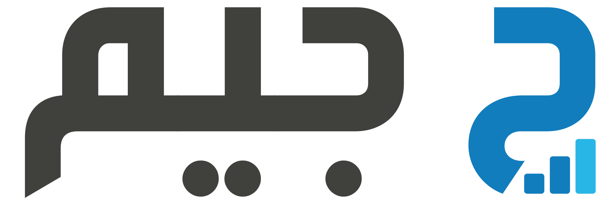

كل صفحات النموذج الأولي
45 صفحة على 3 مستويات: المنصّة ← المنظمة ← المشروع.
عام
تسجيل الدخولlogin.htmlمكتبة لوحات المتابعة (213 لوحة)dashboard-gallery.htmlشبكة الأنظمة واللوائح (لوحة تفاعلية)policy-network.htmlشبكة العملاء وطلبات الشراء (لوحة تفاعلية)procurement-network.htmlسير عمل المشتريات ومدة الخدمة (لوحة تفاعلية)procurement-workflow.htmlمنصة المشتريات: العملاء والموردون (لوحة تفاعلية)procurement-marketplace.htmlشبكة العملاء والموردين (لوحة تفاعلية)client-supplier-network.htmlمراقبة شبكة المنشأة · داكن (لوحة تفاعلية)venue-ops.htmlمراقبة شبكة المنشأة · فاتح (لوحة تفاعلية)venue-ops-light.htmlنبض المتجر الإلكتروني (لوحة تفاعلية)ecommerce-pulse.htmlإدارة الأسطول والتوصيل (لوحة تفاعلية)fleet-ops.htmlإدارة العقارات (لوحة تفاعلية)real-estate.htmlلوحة التسويق «نكسس» (لوحة تفاعلية)nexus-marketing.htmlالمبيعات والتسويق (لوحة تفاعلية)sales-overview.htmlأداء فريق المبيعات (لوحة تفاعلية)sales-team.htmlنظرة على فريق المستودع (لوحة تفاعلية)warehouse-team.htmlمجمّعات السيولة المركّزة (لوحة تفاعلية)liquidity-pools.htmlخزينة الأصول الرقمية (لوحة تفاعلية)token-treasury.htmlإدارة العملاء — مراحل البيع (لوحة تفاعلية)crm-pipeline.htmlإدارة مهام الفريق (لوحة تفاعلية)team-tasks.htmlتتبع الوقت للفرق (لوحة تفاعلية)time-tracking.htmlتحليل مسار المبيعات والعملاء (لوحة تفاعلية)crm-analysis.htmlالإدارة المالية والتدفق النقدي (لوحة تفاعلية)finance-ops.htmlالعملاء المحتملون والطلبات الواردة (لوحة تفاعلية)crm-leads.htmlتفاصيل مشروع حملة (لوحة تفاعلية)campaign-project.htmlلوحة مهام المشاريع بالسحب والإفلات (لوحة تفاعلية)task-board.htmlإدارة أعمال المقاولات (لوحة تفاعلية)construction-crm.htmlاستوديو المشاريع والجدول الزمني (لوحة تفاعلية)project-studio.htmlالتمويل والسيولة النقدية (لوحة تفاعلية)treasury-funding.htmlإيرادات الاشتراكات والاحتفاظ (لوحة تفاعلية)saas-metrics.htmlمركز قيادة سلسلة الإمداد (لوحة تفاعلية)supply-command.htmlمخاطر الموردين والتسليم (لوحة تفاعلية)supplier-risk.htmlتقييم أداء الموردين (لوحة تفاعلية)supplier-scorecard.html
المنصّة
قائمة المنظماتplatform-organizations.htmlتفاصيل منظمة وحالة التجهيزplatform-organization-details.htmlمكتبة النماذج ووصف الذكاء الاصطناعيplatform-templates.html